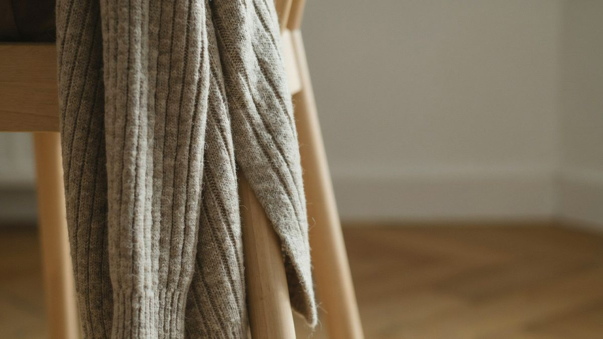

お金が一円もない。そんなときに、相談していいのかと迷う方がいます。相談してください。お金がないときこそ、話を聞かせてほしいのです。
当事務所の相談は無料です。今、財布に何も入っていなくても大丈夫です。お金がないから相談できない、ということはありません。
生活保護は、暮らしていくお金が足りない人を支える国の制度です。国が決めた最低限の生活費より収入が少なければ、その足りない分を受け取れます。収入がまったくない場合は、最低限の生活費と同じ額が支給されます。つまり、所持金がゼロであることは、断られる理由になりません。制度がもともと想定している状態です。

通帳がない。身分証が見つからない。携帯が止まっている。そういう方もいます。それでも相談はできます。足りないものは、あとから一緒に用意します。
生活保護は、だれでも使える仕組みです。年齢や、これまでの仕事や、お金がなくなった理由は関係ありません。うまく説明できなくても構いません。話せるところだけ教えてください。順番は、こちらで整理します。
役所の窓口が不安だという声もよく聞きます。必要に応じて、一緒に行きます。送り迎えをすることもあります。何を聞かれ、何を答えればいいのかも、事前にお伝えします。
何から話せばいいかわからない、で大丈夫です。「お金がなくて困っています」。その一言で伝わります。
相談は無料です。お問い合わせページからご連絡ください。